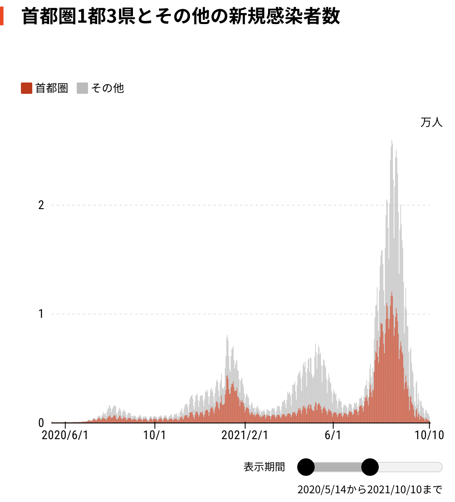

9. 感染症モデル（SIRモデル）#
到達目標
SIRモデルの各変数 \(S,I,R\) が現実の何を表すかを明確に説明できる．
SIRモデルの基本構造（不変集合・閾値・最終感染規模）を解析的に導出できる．
実データとモデルの比較を「観測モデル＋パラメータ同定（逆問題）」として定式化できる．
モデルが実データを再現できない場合に，その原因を数理的に分類できる．
キーワード
コンパートメントモデル（区分モデル）
正不変性・保存則・単調性
基本再生産数 \(R_0\)
最終感染規模方程式（final size equation）
観測モデル・報告率・逆問題（同定）
モデル誤差（model discrepancy）
準備
anacondaを使用し，jupyter labを起動する．
Documents（書類）/mathematical_studiesフォルダをダブルクリックで開き+をクリックして新しいファイルを作成する．ファイル名を
9_{学籍番号}_{氏名}.ipynbに変更する．例：9_SI25999_香川渓一郎.ipynb
import numpy as np
import pandas as pd
import matplotlib.pyplot as plt
from matplotlib import rcParams
rcParams['font.family'] = 'Hiragino Sans'
9.1. 感染症を数理モデルで捉える#
新型コロナウイルスの感染拡大をデータで見返す．

※ 日本経済新聞「チャートで見る日本の感染状況 新型コロナウイルス」2025年1月8日閲覧．https://vdata.nikkei.com/newsgraphics/coronavirus-japan-chart/
感染症の拡大は個体間の接触によって起こる感染が連鎖することによって進む．
感染性をもつAさんと感受性をもつBさんが接触する．
感染性：他人にウイルスを感染させる性質
感受性：他人からウイルスを感染させられる性質（まだ感染しておらず，免疫を持たない）
一定の確率でBさんが感染する．
この現象を数理モデルで捉える．
これは本質的に確率過程であり，厳密に扱うなら個体をノードとしたネットワーク上の感染伝播を考えることになる．
ただしそのままでは次の困難が生じる．
個体数が多すぎる．
接触ネットワークが未知である．
データから推定する自由度が大きすぎる．
そこで，「個体の詳細は捨て，集団全体を平均化して記述する」方向で数理モデル化を試みる．
感染症の拡大において，人々を次の3種類に大別する．
感受性を持つ人（Susceptible）
感染性を持つ人（Infectious）
除去された人（Removed）
これらの頭文字を取ってSIRモデルと呼ばれる．
9.1.1. \(S(t)\)：感受性を持つ人の数#
まだ感染しておらず，感染する可能性がある人の数．
“免疫がない（十分でない）人” と読み替えてよい．
現実には，ワクチン・既感染・年齢層などで「感受性」は層構造を持つが，SIRでは全部まとめて1つにする．
9.1.2. \(I(t)\)：感染性を持つ人の数#
他者へウイルスを移し得る状態にいる人の数．
検査で陽性になった人数ではないことに注意．
「無症状」でも感染性があればこれに分類される．
観測されるデータ（報告感染者数）は多くの場合，感染性を持つ人の一部に過ぎない．
9.1.3. \(R(t)\)：除去された人（Removed）#
以下のように感染連鎖から外れた人をまとめて表すことが多い．
回復して免疫を得た（再感染）
死亡した
隔離された
入院して接触しない
9.1.4. 観測できる量#
現実のデータは次のようなものがある：
日次新規感染者（incidence）
検査陽性者数（reported cases）
入院者数・重症者数
死亡者数
しかし，これらは \(S,I,R\) のどれかを“直接”見ているわけではない．
9.2. SIRモデルの導出#
9.2.1. モデルの仮定（現象論）#
時刻 \(t\) における感染機会の総数は，感受性者\(S\)と感染者\(I\)の組み合わせに比例すると考える．
1人の感染者が単位時間に作る接触の回数×感染確率をまとめて \(\beta\) と置く．
除去は感染者に比例し，比例定数を \(\gamma\) と置く．
9.2.2. SIRモデル#
\(\beta\)：感染が起きる速さ（社会的接触・対策の影響が強い）
\(\gamma\)：除去の速さ（回復・隔離の速さ）
9.3. 力学系としての基本構造（解析の入口）#
9.3.1. 正不変性（非負性）#
初期値が \(S,I,R\ge 0\) なら，時間発展で負にならない．
→ 「人数を表しているのに負になる」という破綻は起こらない．
Note
初期値が
を満たすとき，解が存在する限り
が成り立つ。すなわち
は 正不変集合である。
証明
ベクトル場
を考える．
(i) 平面 \(S=0\) 上
\(S=0\) なら
よって，軌道は\(S=0\)を横切って\(S<0\)側へ出ていくことはない（少なくとも\(S\)成分は負方向に進めない）．
Note
演習1
平面 \(I=0\)，\(R=0\) についても軌道が\(I<0\)，\(R<0\)へと出ていかないことを確かめよ．
9.3.2. 保存則#
より
3変数から2変数に減らすことができる．
9.3.3. 単調性#
Note
次が成り立つ．
すなわち
\(S(t)\)は単調減少
\(R(t)\)は単調増加
証明
(i) \(S(t)\) は単調減少する．
従って \(S(t)\) は単調非減少する．
(2) \(R(t)\) は単調増加する
従って \(R(t)\) は単調増加する．
Warning
一般に\(I(t)\)は単調ではない． また，\(I(t)\)は極大値を取るとしたら1回のみで，その後は単調減少する．（単峰性）
であるから \(I(t)\) の増減は \(S(t)\) の大きさで決まる：
\(S(t)>\gamma/\beta\) のとき：\(\frac{dI}{dt}>0\)（増加）
\(S(t)=\gamma/\beta\) のとき：\(\frac{dI}{dt}=0\)（極値候補）
\(S(t)<\gamma/\beta\) のとき：\(\frac{dI}{dt}<0\)（減少）
ここで \(S(t)\) は単調減少なので，\(S(0)>\gamma/\beta\)であれば \(I(t)\) は最初増加し，ある時刻でピークを迎え，その後減少する（単峰）という形になる．
もちろん\(S(0)<\gamma/\beta\)であれば\(I(t)\)はピークを迎えずに減少する．
9.4. 閾値理論#
現実問題として，初期値では人口のほとんどは感受性者であり，そこに僅かな感染者がいる状況を考える． まだ感染は拡大していないので，除去された人はいないものとする．
9.4.1. 初期段階の近似#
初期は \(S(t) \approx N\) とみなせるので
従って，
とおくと
\(R_0>1\)：感染拡大
\(R_0<1\)：感染終息
を表す．
この\(R_0\)を基本再生産数と呼ぶ．
接触が多い（大きい \(\beta\)）ほど\(R_0\)は大きい
隔離が早い（大きい \(\gamma\)）ほど\(R_0\)は小さい
→ 政策介入によって感染拡大か終息かを制御できる可能性を示唆．
Note
演習2
感染を拡大させないためには\(R_0\)を小さくすることが肝要である． \(R_0\)を小さくするためにできることには何があるか，5つ以上考えよ．
9.5. 最終感染規模方程式（Final size equation）#
\(t\to \infty\)で感染が収束（\(I(t)\to 0\)）したときの感受性者数\(S(t)\to S_{\infty}\)と除去された人の数\(R(t)\to R_{\infty}\)を調べる．
\(\frac{dS}{dt}\)と\(\frac{dR}{dt}\)の微分方程式より次の微分方程式が得られる．
この微分方程式は変数分離形式なので解ける． 保存則\(S(t)+I(t)+R(t)=N\)と\(t\to\infty\)の極限を考えれば，未知数を\(S_{\infty}\)のみにすることができ，次の最終感染規模方程式を得る．
ここで\(R(0)=0\)なので
とできる． これを解くことで\(S_\infty\)を求めることができるが，超越方程式なので数値的に解くことを試みる．
SIRモデルの時間発展を全て追わなくても，
最終的に感受性者がどれだけ残るか（\(S_\infty\)）
累積感染者（除去者）数がどれくらいか（\(R_\infty=N-S_\infty\)）
がこの方程式から求まる．
特に
\(\beta/\gamma = \frac{R_0}{N}\) が大きいほど \(S_\infty\) は小さくなり，
累積感染者数 \(R_\infty\) が大きくなる．
9.5.1. 数値的に最終規模方程式を解く#
def fse_residual(S, S0, N, beta, gamma, R_init=0.0):
"""FSEの左辺-右辺（=0を解く）"""
a = beta / gamma
return np.log(S) + a*(N - S) - (np.log(S0) + a*R_init)
def solve_fse_bisection(S0, N, beta, gamma, R_init=0.0, tol=1e-10, max_iter=200):
"""
二分法で S_inf を解く。
S_inf は (0, S0] にある（流行でSは減るので）。
"""
# loからhiの間で解を探す
# 下端は log のため0にできないので小さい正数
lo = 1e-15 * N
hi = S0
f_lo = fse_residual(lo, S0, N, beta, gamma, R_init)
f_hi = fse_residual(hi, S0, N, beta, gamma, R_init)
# 通常パラメータでは f(lo)>0, f(hi)<=0 となり根を挟む
# もし挟めない場合は情報を出して止める
if f_lo * f_hi > 0:
raise ValueError(
"二分法の区間が根を挟んでいません。"
f" f(lo)={f_lo:.3e}, f(hi)={f_hi:.3e}. "
"N,beta,gamma,S0 の設定を確認してください。"
)
for _ in range(max_iter):
mid = 0.5*(lo+hi)
f_mid = fse_residual(mid, S0, N, beta, gamma, R_init)
if abs(f_mid) < tol or (hi-lo) < tol*max(1.0, hi):
return mid
# 根を挟む側を更新
if f_lo * f_mid > 0:
lo, f_lo = mid, f_mid
else:
hi, f_hi = mid, f_mid
return 0.5*(lo+hi)
N = 1
S0 = N - 0.0001 # 初期感染がわずか
beta = 0.30
gamma = 0.10
R_init = 0.0
S_inf = solve_fse_bisection(S0, N, beta, gamma, R_init=R_init)
R_inf = N - S_inf
print(f"S_inf ≈ {S_inf:.6f}")
print(f"R_inf ≈ {R_inf:.6f}")
print(f"最終感染割合 R_inf/N ≈ {R_inf/N:.6f}")
print(f"beta/gamma = {beta/gamma:.3f}")
最終規模を可視化
N = 1.0 # 正規化して割合で見たい場合（N=1が便利）
S0 = N - 0.00001 # 初期ほぼ全員感受性（割合）
R_init = 0.0
R0_list = np.linspace(0.5, 5.0, 46) # 0.5〜5.0
Sinf_list = []
Rinf_list = []
for R0 in R0_list:
beta = R0 # gamma=1 とすれば beta/gamma=R0
gamma = 1.0
S_inf = solve_fse_bisection(S0, N, beta, gamma, R_init=R_init)
Sinf_list.append(S_inf)
Rinf_list.append(N - S_inf)
Sinf_list = np.array(Sinf_list)
Rinf_list = np.array(Rinf_list)
plt.figure(figsize=(7,3))
plt.plot(R0_list, Sinf_list, label=r"$S_\infty/N$")
plt.plot(R0_list, Rinf_list, label=r"$R_\infty/N = 1-S_\infty/N$")
plt.axvline(1.0, color="gray", lw=1, alpha=0.6)
plt.xlabel(r"$R_0=\beta/\gamma$")
plt.ylabel("ratio")
plt.title("基本再生産数に対する最終感染規模方程式の解")
plt.grid(True, alpha=0.3)
plt.legend()
plt.tight_layout()
plt.show()
9.6. SIRモデルの限界#
実際の感染の動向では感染者数のピークは何度も現れる．
SIRモデルでの変数\(I(t)\)ある時刻\(t\)における感染者数の総数を記述しており，その日に報告された感染者数とは厳密には一致しない． 感染者がほぼ全て入院するものと仮定すれば，その日にいる患者数が最も\(I(t)\)の意味に近いだろう．

※ 日本経済新聞「チャートで見る日本の感染状況 新型コロナウイルス」1月8日閲覧．https://vdata.nikkei.com/newsgraphics/coronavirus-japan-chart/
患者数の動向を観ると何度かピークが現れていることが分かる． しかし，SIRモデルでは\(I(t)\)は単峰性を持つことから，ピークは1度しか訪れない．
→ 現実のデータに合わせるにはモデルを改善する必要がある． （パラメタの値を変えるだけでは現実のデータには合わせられない）
Note
演習3
より現実に即したモデルにするには何を変えれば良いか． 5つ以上アイデアを挙げよ．
9.6.1. SIRの数値解#
def sir_rhs(S, I, R, beta, gamma, N):
dS = -beta*S*I/N
dI = beta*S*I/N - gamma*I
dR = gamma*I
return dS, dI, dR
def euler_sir(S0, I0, R0, beta, gamma, N, t):
S = np.empty_like(t, dtype=float)
I = np.empty_like(t, dtype=float)
R = np.empty_like(t, dtype=float)
S[0], I[0], R[0] = S0, I0, R0
h = t[1] - t[0]
for k in range(len(t)-1):
dS, dI, dR = sir_rhs(S[k], I[k], R[k], beta, gamma, N)
S[k+1] = S[k] + h*dS
I[k+1] = I[k] + h*dI
R[k+1] = R[k] + h*dR
# 数値誤差で負に落ちるのを避ける（教育上の安全策）
S[k+1] = max(S[k+1], 0.0)
I[k+1] = max(I[k+1], 0.0)
R[k+1] = max(R[k+1], 0.0)
return S, I, R
N = 1_000_000
beta = 0.30
gamma = 0.10
S0 = N - 10
I0 = 10
R0 = 0
# 時間軸（例：0〜160日）
t = np.linspace(0, 160, 1601) # 刻み幅 h=0.1
# ===== 数値計算 =====
S, I, R = euler_sir(S0, I0, R0, beta, gamma, N, t)
# （任意）日次新規感染者（incidence）
inc = beta * S * I / N
# ===== 可視化：S, I, R の時系列 =====
fig, ax = plt.subplots(figsize=(7, 3.5))
ax.plot(t, S, label="S(t) 感受性者")
ax.plot(t, I, label="I(t) 感染性者")
ax.plot(t, R, label="R(t) 除去者")
ax.set_xlabel("時刻 t")
ax.set_ylabel("人数")
ax.set_title(f"SIRモデル（Euler） R0=beta N/gamma={beta*N/gamma:.2f}")
ax.grid(True, alpha=0.3)
ax.legend()
plt.tight_layout()
plt.show()
# ===== 可視化：日次新規感染者（incidence） =====
fig, ax = plt.subplots(figsize=(7, 3.0))
ax.plot(t, inc, label=r"inc(t) = $\beta S I / N$")
ax.set_xlabel("時刻 t")
ax.set_ylabel("新規感染者（モデル）")
ax.set_title("日次新規感染者（incidence）の時系列")
ax.grid(True, alpha=0.3)
ax.legend()
plt.tight_layout()
plt.show()
9.7. 現実のデータを見る#
https://idsc.tmiph.metro.tokyo.lg.jp/diseases/flu/flu/
# 取得したデータ
y = np.array([
161, 278, 416, 818, 1385, 1990, 2335, 4333,
9926, 12133, 18707, 21608, 14947, 10495, 7440, 6739
], dtype=float)
t = np.arange(len(y), dtype=float) # 週インデックス（0,1,2,...）
plt.figure(figsize=(7,3))
plt.plot(t, y, "o-", label="data (weekly total)")
plt.xlabel("week index")
plt.ylabel("cases")
plt.grid(True, alpha=0.3)
plt.legend()
plt.tight_layout()
plt.show()
def sir_rhs_frac(s, i, r, beta, gamma):
ds = -beta*s*i
di = beta*s*i - gamma*i
dr = gamma*i
return ds, di, dr
def euler_sir_frac(s0, i0, r0, beta, gamma, t):
s = np.empty_like(t, dtype=float)
i = np.empty_like(t, dtype=float)
r = np.empty_like(t, dtype=float)
s[0], i[0], r[0] = s0, i0, r0
h = t[1] - t[0] # 今回は 1 週刻み
for k in range(len(t)-1):
ds, di, dr = sir_rhs_frac(s[k], i[k], r[k], beta, gamma)
s[k+1] = s[k] + h*ds
i[k+1] = i[k] + h*di
r[k+1] = r[k] + h*dr
# 数値誤差の安全策
s[k+1] = max(s[k+1], 0.0)
i[k+1] = max(i[k+1], 0.0)
r[k+1] = max(r[k+1], 0.0)
# 3つが合計1からズレるので軽く正規化（任意）
total = s[k+1] + i[k+1] + r[k+1]
if total > 0:
s[k+1] /= total
i[k+1] /= total
r[k+1] /= total
return s, i, r
最適化によってパラメタの値を推定する．
from scipy.optimize import least_squares
# 週インデックス
t = np.arange(len(y) + 1, dtype=float)
# ↑ 週次新規を作るために s_k - s_{k+1} を使うので、1点多く解を持つ
def predict_weekly_cases(params):
beta, gamma, i0, C = params
i0 = float(i0)
s0 = 1.0 - i0
r0 = 0.0
s, i, r = euler_sir_frac(s0, i0, r0, beta, gamma, t)
# 週次新規（fraction） = s_k - s_{k+1}
new_frac = s[:-1] - s[1:]
y_hat = C * new_frac
return y_hat, s, i, r
def residuals(params):
y_hat, _, _, _ = predict_weekly_cases(params)
return y_hat - y
# 初期値（雑でOK。後で改善できる）
beta0 = 0.8
gamma0 = 0.3
i00 = 1e-4
C0 = y.max() / 0.02 # 適当なスケール初期値
x0 = np.array([beta0, gamma0, i00, C0])
# 境界（不合理な値を防ぐ）
lb = np.array([1e-6, 1e-6, 1e-10, 1.0])
ub = np.array([10.0, 10.0, 0.2, 1e9])
res = least_squares(residuals, x0, bounds=(lb, ub), max_nfev=20000)
beta_hat, gamma_hat, i0_hat, C_hat = res.x
print("=== estimated parameters ===")
print(f"beta = {beta_hat:.6f}")
print(f"gamma = {gamma_hat:.6f}")
print(f"i0 = {i0_hat:.6e}")
print(f"C = {C_hat:.6f}")
print(f"R0 = beta/gamma = {beta_hat/gamma_hat:.3f}")